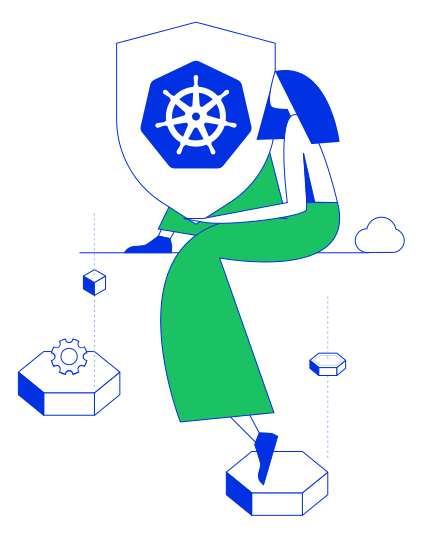

In this tutorial we will learn about Alcide Cloud Firewall Policies, which are part of Alcide Runtime Security (ART). We will see how Security and/or Opertion teams can create and manage firewall policy. The policies are effectively application aware Pod segmentation policies to support use cases that are not available as part of Kubernetes native network policies. For example, network policy that limit Pod access to cluster external database provided as a domain name, limit Pod access to 3rd party services such as Slack, address PCI DSS compliance needs, and more.

For this tutorial you will need a Kubernetes cluster with enough permissions to deploy resources into it.
- Install and Set Up kubectl.
- Install Minikube, or any working Kubernetes Cluster
- Alcide Cloud Account

In order to implement Alcide Runtime Security features, we will need to onboard your Kubernetes cluster into your Alcide Cloud Account
- Login to your account: https://yourcompany.cloud.alcide.io
- On the left hand side menu, click on Create Data Center/Cluster
- Follow the steps in the UI wizard.
At this point you should be able to see your cluster, worker nodes, and workloads, in the Infrastructure View and the application components in your Application View

Policy Structure
Let's begin with few Alcide Cloud Policy examples before we see the syntax definiton:
name: "SSH Policy"
description: "Restrict SSH access to jump-hosts only"
role: "SEC"
enabled: true
priority: 1
selectors:
- type: "PROPERTY"
key: "DATACENTERUID"
operator: "IN"
values:
- "AWS"
- type: "PROPERTY"
key: "CLUSTERUID"
operator: "IN"
values:
- "us-east-1"
- "us-east-2"
- "us-west-1"
- "us-west-2"
outRules:
- action: "ACCEPT"
description: "Allow SSH access from jump-host instances"
protocol: 109
ports:
- start: 22
end: 22
enabled: true
logData:
logLevel: "FULL_LOG"
ruleTargets:
- selectors:
- type: "LABEL"
key: "role"
operator: "IN"
values:
- "jump-host"
Run the deployment
First, we'll need to create a new Namespace for our deployment:
Just copy & paste this into your terminal and run:
cat <<EOF | kubectl apply -f -
kind: Namespace
apiVersion: v1
metadata:
name: alcide-cp-demo
EOF
Let's run a simple deployment:
cat <<EOF | kubectl apply -f - && kubectl rollout status -n alcide-cp-demo deployment/cloudpolicy-demo --watch
apiVersion: apps/v1
kind: Deployment
metadata:
name: cloudpolicy-demo
namespace: alcide-cp-demo
labels:
app: cp-demo
spec:
replicas: 1
selector:
matchLabels:
app: cp-demo
template:
metadata:
labels:
app: cp-demo
spec:
containers:
- name: cp-demo
image: busybox
command:
- sleep
- "3600"
EOF
Let's make sure we can access google.com & alcide.io using HTTPS:
kubectl exec -it -n alcide-cp-demo $(kubectl get pods -n alcide-cp-demo -l app=cp-demo -o custom-columns=:metadata.name --no-headers) -- sh -c "if wget --spider -q -T 5 https://www.google.com &> /dev/null; then echo OK; else echo Address is not available; fi"
kubectl exec -it -n alcide-cp-demo $(kubectl get pods -n alcide-cp-demo -l app=cp-demo -o custom-columns=:metadata.name --no-headers) -- sh -c "if wget --spider -q -T 5 https://www.alcide.io &> /dev/null; then echo OK; else echo Address is not available; fi"
Adding a new Cloud Policy
We will download the cloud policy and deploy it to Alcide Cloud Policy Management server.
curl -o cp-demo.yaml https://codelab.alcide.io/codelabs/runtime-codelab-04/cp-demo.yaml && dcvctl policy set -f cp-demo.yaml
- Go to your account at Alcide Cloud Console, and navigate to the Policies view,
- here you can get visibility to All your Cloud policies.
- Notice this is a multi-clusters & multi-cloud view.
Check it in Simulation mode (default)
Initially, let's initiate traffic to https://www.alcide.io and https://www.google.com and see the drop alerts.
Notice that in this mode we're not block the packets yet.
kubectl exec -it -n alcide-cp-demo $(kubectl get pods -n alcide-cp-demo -l app=cp-demo -o custom-columns=:metadata.name --no-headers) -- sh -c "if wget --spider -q -T 5 https://www.google.com &> /dev/null; then echo OK; else echo Address is not available; fi"
kubectl exec -it -n alcide-cp-demo $(kubectl get pods -n alcide-cp-demo -l app=cp-demo -o custom-columns=:metadata.name --no-headers) -- sh -c "if wget --spider -q -T 5 https://www.alcide.io &> /dev/null; then echo OK; else echo Address is not available; fi"
- Go to your account at Alcide Cloud Console, and navigate to the Application view,
- In the top search bar, search for cloudpolicy-demo and apply a filter to the view.
- Review the network activity between cloudpolicy-demo and www.alcide.io.
- In the right pane, go to Alerts tab, you should see Drop Alerts
Change Alcide's Agent to Enfourcement mode
We are going to switch Alcide's Agent running mode - enforcement mode.
kubectl set env daemonsets/agent-nodelet -n alcide ALCIDE_WORKLOAD_ENFORCE_MODE=inline && kubectl rollout status -n alcide daemonset/agent-nodelet --watch
Policy Blocked Traffic
Now, lets how we actually block the packets, run this again:
kubectl exec -it -n alcide-cp-demo $(kubectl get pods -n alcide-cp-demo -l app=cp-demo -o custom-columns=:metadata.name --no-headers) -- sh -c "if wget --spider -q -T 5 https://www.google.com &> /dev/null; then echo OK; else echo Address is not available; fi"
kubectl exec -it -n alcide-cp-demo $(kubectl get pods -n alcide-cp-demo -l app=cp-demo -o custom-columns=:metadata.name --no-headers) -- sh -c "if wget --spider -q -T 5 https://www.alcide.io &> /dev/null; then echo OK; else echo Address is not available; fi"
- This time the traffic should be dropped
Reset the environment
Delete the cloudpolicy-demo Deployment and the cloud policies we created.
kubectl delete ns alcide-cp-demo
dcvctl policy get
dcvctl policy del <policy_id>
In this codelab we covered:
- Alcide Cloud Policy syntax
- Implemented Alcide Cloud Policy
- Alcide's UI centralised policies view